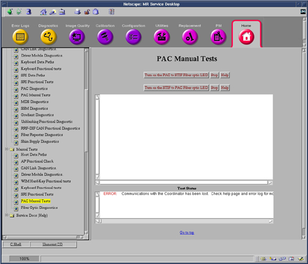
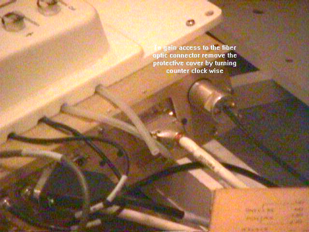
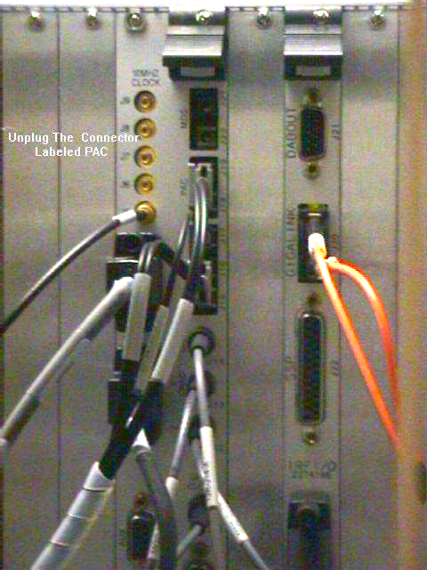

Operating Documentation
Direction 5133315-3, Rev# 14
Signa EXCITE HD 1.5T Service Methods
Module Version 1.0, Version Date 5/3/07
Operating Documentation |
| Required Persons | Preliminary Reqs | Procedure | Finalization |
|---|---|---|---|
| 1 | Not Applicable | 10 mins | Not Applicable |
This procedure tests the data paths in both directions from the PAC to the STIF
Go to the Service Desktop and start the Common Service Browser then go to the Diagnostic Tab and select under [Manual Tests], [PAC Manual Tests]. See Illustration 1.
Illustration 1: PAC Manual Tests

The PAC to STIF LED test causes the PAC module to turn on the fiber optic driver LED that is normally used to send serial messages from the PAC module to the STIF board in the MGD chassis. The test allows you to visually inspect the PAC serial transmitter and the fiber optic cables that connect to it.
Start the test by clicking on the [Turn on the PAC to STIF Fiber optic LED] button.
Disconnect the output fiber cable on the PAC to inspect the LED. If it is ON, then the transmitter is working.
Illustration 2: PAC

Reconnect the PAC fiber cable.
Click on the [Stop] button to stop the test.
The STIF to PAC LED test causes the MGD chassis to turn on the PAC serial port transmitter on the STIF board. This test allows you to visually inspect the STIF serial transmitter and fiber optic cables that connect to it.
Disconnect the PAC output fiber cable on the STIF. STIF is located in the System Cabinet.
Illustration 3: STIF Board

Click on the Turn on the [STIF to PAC Fiber Optic LED] button to start the test.
Inspect the LED. If you can see it then the system is working correctly.
Stop the test by clicking on the [Stop] button.
Reconnect the PAC Fiber cable.
No finalization steps.